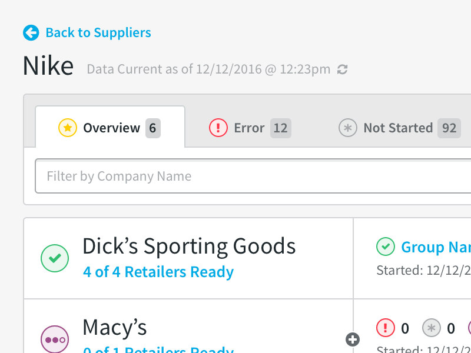
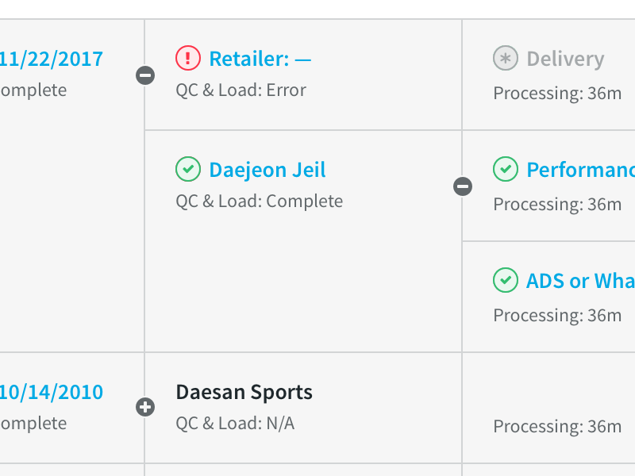
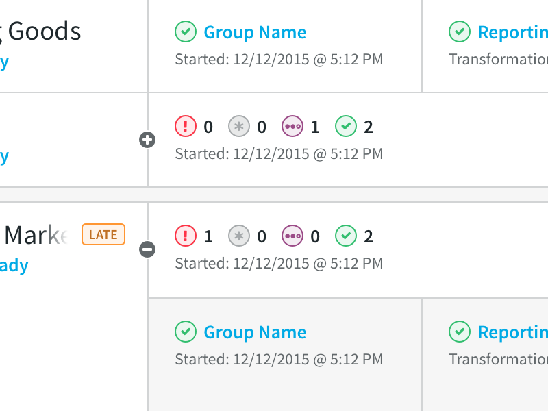
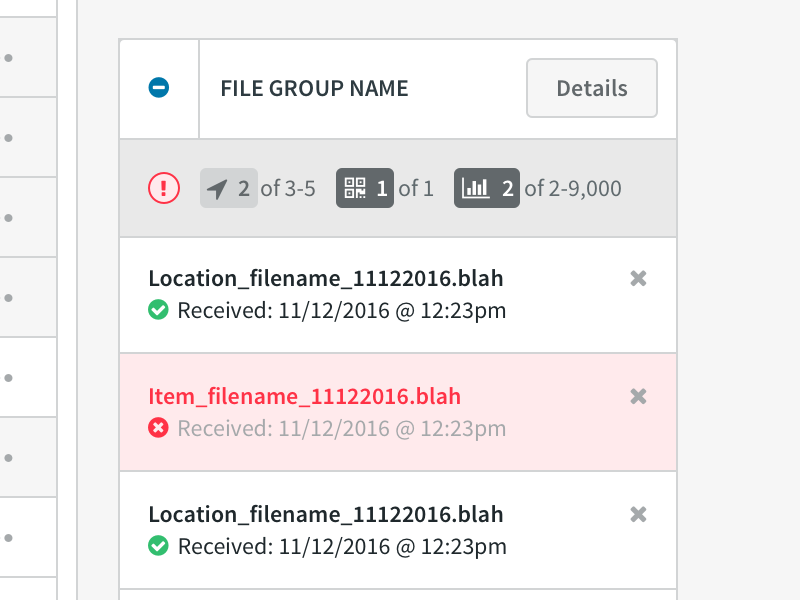
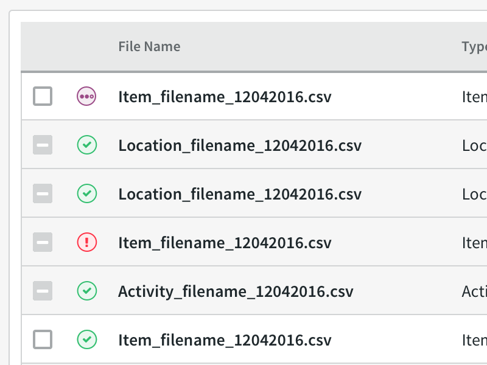
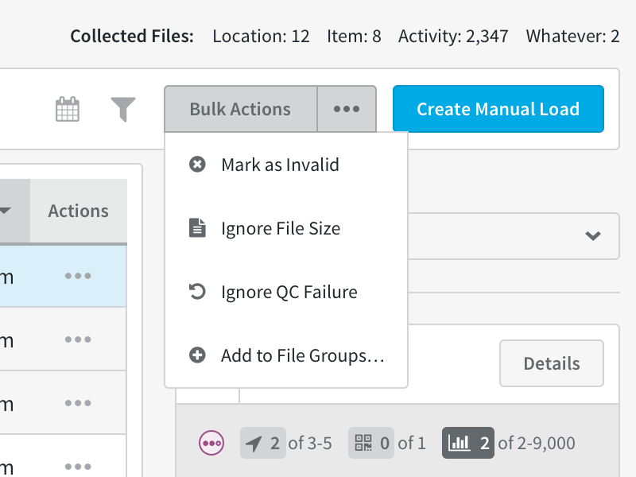
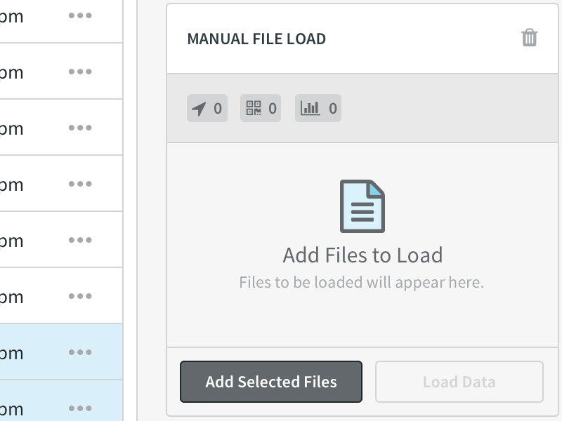

Project Goals
At SPS Commerce, the operations team needed improved visibility into automated processes which extracts, transforms and loads customer data into our products. The tool needed to provide a high-level view which quickly gives a sense of the overall status of the load, but also provide in-depth detail and powerful troubleshooting tools to enable the team to more efficiently serve their customers.
Getting Started
Before beginning design work, I had much to learn in order to accurately represent the processes in the interface. This involved a lot of discussion with engineers to map out the loading processes. What I discovered was, although there were countless edge cases to cover the custom processes for certain retailers' data, it could be represented in a single standardized view.
Then I sat down with many members of our operations team to learn their current workflow, identify their most common pain points, and develop product requirements. Soon I put pen to paper, rapidly prototyping concepts and getting quick feedback from the team to validate these interface ideas.
The Analytics Monitor
Through these interviews, it became clear that the most urgent need was an overview display that gave the user an immediate view of what was happening in the system. It needed to be fast above all else—in most cases they would be viewing this data while a customer was on the phone. However, it also needed to be entirely accurate, which meant displaying every detail along the data transformation process.
In the new interface, the operator is greeted by the Monitor where they can get a pretty good sense of what is going on with the current data load in a glance. For each retailer, it's easy to identify the overall status of the data, as well as how far along in the process the data currently is. The operator can then choose to dive deeper to investigate the status of each individual cycle.
A ton of information is packed into each line, but it's designed to be scannable with data placed in the proper context to reduce mental load.
Design Details
Here's a few of the key features that helped shape the experience:
-

Tabbed Navigation
The tabbed navigation not only helps easily navigate through the monitor while keeping data prioritized according to their workflow, but it serves as a heads up display providing a quick count of the data load status.
-

Branching Structure
The data loaded can branch into multiple sets at any step of the process. This is visualized with a simple expand and collapse mechanism, giving visual priority to the most recently processed data.
-

Bundled Retailers
Some retailers send their data as several packages in a large bundle. With this simple overview, an operator can see in a single line the status of all retailers in a bundle.
Data Collection
Another key pain point discovered was dealing with junk data. A lot of times, retailers will send over wrong, old, or otherwise bad data that would get loaded into the system and make their analytics dashboards inaccurate.
The detailed Data Collection view was built to address the most common pain point of our operators: dealing with junk data. This tool was designed to provide detailed visibility into every file that was transfered. It also allows the operator to perform advanced operations at the file level with without having to go directly into the database.
Key Features
Working collaborators with the operators who would use the interface, I designed the following key features:
-

File Group Actions
A file group requires a range of files to be loaded correctly into the system. This interface provides quick access to individual file groups within a data set and allows the operator to view, add, or remove individual files in that group.
-

Individual File Visibility
Each file received is given a visible status and detailed information for the operator to analyze. The files also have individual actions and can be quickly downloaded for inspection of the raw data.
-

Bulk File Actions
Fairly often, retailers send over a lot of junk files in a single set. To deal with this, there's a bulk action menu to take care of all selected files at once.
-

Manual Data Load
When retailers send over historical data, the operator had to load it into the system manually. Now, it's as simple as checking off the files and hitting a button, instead of going directly to the database.
The Results
This MVP release of the Command Center dramatically reduced operator response time to service calls. It not only provided quick visibility into the system, but also allowed operators to provide many troubleshooting actions in a single application, rather than having to mess around with manual controls and database queries.
After becoming successful internally, SPS began to offer a limited read-only version of the application as a customer product to provide greater transparency and further reduce service calls.
What I Learned
In a complex project, it's invaluable to begin with a complete understanding of the business logic to build an effective workflow tool. Sitting down and interviewing users and engineers alike allowed me to effectively lay the proper foundation for the experience and better address user needs.